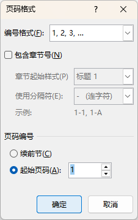

多重页码
Multiple Page Number
- 论文页码一般要求 General
- 封面、原创性声明：不显示页码
- 中英文摘要、目录：页码大写罗马数字、从I开始
- 正文：页码阿拉伯数字，从1开始
- 参考文献：页码跟随正文
- 致谢：页码跟随正文
- 附录：无明确要求；一般从1开始
- 思路 Approach
- 使用分节符将文章划分为诺干节；添加页码，并取消节于节之间的链接，以便单独设置页码格式
- 各节划分如下
封面、原创性声明：划分在一节
中、英文摘要、目录：划分在一节
正文、参考文献和致谢：划分在一节
- 操作 Operation
- 创建 Word 文档
- 编辑以下标题内容作为测试，每个标题单独一行/一个段落：
cover
declaration
摘要
abstract
TOC
chap1
chap2
chap3
chap4
chap5
reference
acknowledge
- 光标定位到"摘要"前面，插入分页符：布局 → 页码设置 → 分隔符 → 下一页
- 光标定位到"chap1"前面，插入分页符
- 为每个标题指定"段前分页"，使得每个标题独占一页
- 鼠标定位在正文部分/第3节，插入页码 → 页面底部 → 普通数字2，在页面底部居中位置插入数字；此时，前面2节页同时插入数字页码并连续编号
- 取消链接到前一节
取消"链接到前一节"
- 编辑页码格式，设置从1开始

编辑"页码格式"
- 光标定位到第2节，同样取消链接到前一节，并设置页码格式为大罗马，从I开始
- 光标定位到第1节，删除页码
- 关闭"页码页脚"
- 最后效果，请访问 页码设置参考
如果需要调整页码到底部的位置，应该先统一调整，再取消链接，否则每一节都要重复设置
- 拓展练习 Extending
- 完善文档信息，以便在页眉引用
- 奇偶页不同：分别设置第2节、第3节的页眉为奇偶页不同
- 奇数页：章节标题 - "域" → "链接与引用" → "标题1"
- 偶数页：文档标题 - "文档部件" → "标题"